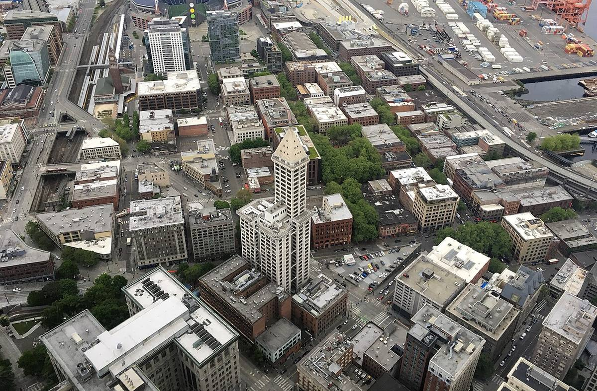

Living in Pioneer Square

Pioneer Square is a neighborhood in the southwest corner of downtown Seattle, Washington, US. It was once the heart of the city: Seattle's founders settled there in 1852, following a brief six-month settlement at Alki Point on the far side of Elliott Bay. The early structures in the neighborhood were mostly wooden, and nearly all burned in the Great Seattle Fire of 1889. By the end of 1890, dozens of brick and stone buildings had been erected in their stead; to this day, the architectural character of the neighborhood derives from these late 19th century buildings, mostly examples of Richardsonian Romanesque. (From Wikipedia, CC BY-SA 4.0)
Pioneer Square is a neighborhood in Downtown, Seattle with about 2,203 residents. The typical home value is about $589K (-3.9% over the past year), and 13 homes sold in the last 12 months. It is very walkable, with higher crime than most neighborhoods in the area.
Home prices and the market
| Typical home value | $589K · -3.9% over 12 months |
|---|---|
| Homes sold, last 12 months | 13 · median sale price $549K · 13 were condos |
| Homes for sale (estimate) | 10 · homes typically go under contract in 18 days |
| Median household income | $81K · 151st highest income of 155 |
Schools
| Elementary | Bailey Gatzert Elementary School, 0.8 mi · 31% meet standard Area average 49% · 127th best elementary schools of 155 |
|---|---|
| Middle school | Washington Middle School, 1.3 mi · 48% meet standard Area average 45% · 129th best middle schools of 155 |
| High school | Summit Public School: Sierra, 0.7 mi · 38% meet standard Area average 54% · 138th best high schools of 155 |
| Nearest college | Seattle University, 1.1 mi |
Share of students meeting the Washington state standard in English and math (2024-25). The nearest school is not always the assigned school; check with the school district.
Safety
About 594 crimes per 1,000 residents a year (violent crimes counted three times), higher crime than most neighborhoods in the area: 155th lowest crime of 155. Based on mapped police incidents in this neighborhood, scaled to the city's FBI-reported rate. Busy commercial areas can look high because visitors are not counted as residents.
Getting around
| Walkability | 17.3 of 20 (very walkable) · 16th most walkable of 155 |
|---|---|
| Light rail or train | Occidental Mall, 0.0 mi · 1st closest to rail of 155 |
| Nearest bus stop | 2nd Ave Ext S & S Jackson St, 0.13 mi |
| How residents commute | 31% take transit · 26% work from home |
Everyday amenities
| Grocery store | Saveway Market, 0.2 mi · 7 within a mile |
|---|---|
| Pharmacy | Ho's Herb & Massage, 0.3 mi |
| Restaurants | 249 within a mile · 7th most restaurants nearby of 155 |
| Shopping | Pioneer Square, 0.2 mi |
| Hospital | Harborview Medical Center, 0.5 mi · 33 clinics within 2 miles |
| Library | International District / Chinatown Library, 0.5 mi |
Parks and recreation
| Nearest park | Occidental Square, 0.1 mi · 63 acres of parks within a mile |
|---|---|
| Large green space | Seattle Center, 1.6 mi |
| Walking trail | Elliott Bay Trail, 0.2 mi |
| Gyms, spas and studios | 24 within a mile |
| Golf | Jefferson Park Golf Course, 2.2 mi |
Thinking about Pioneer Square?
Rachel Yo, Realogics Sotheby's International Realty, can walk you through homes for sale, recent sales and what to know before you buy here.
Your details go only to Rachel Yo at Realogics Sotheby's International Realty to answer your request. They are not sold or shared, and your mobile number and texting permission are never shared with anyone for marketing.
Nearby neighborhoods
- International DistrictSeattle · $450K
- Yesler TerraceSeattle · $562K
- Central Business DistrictSeattle · $591K
- First HillSeattle · $540K
- Pike-MarketSeattle · $674K
- SODOSeattle · $437K
Data as of: home values Zillow 2026-09; recorded sales Nov 2025 – Oct 2026; schools OSPI 2024-25; Census ACS 2020-2024. Distances are straight-line from the center of the neighborhood.